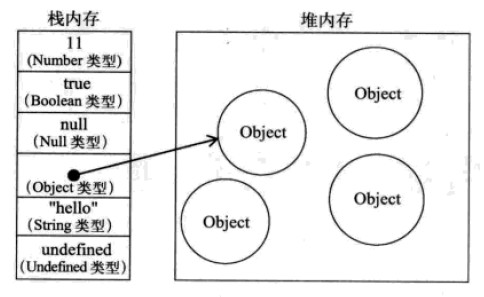

分享人：刘其勇
目录
1.背景介绍
2.知识剖析
3.常见问题
4.解决方案
5.编码实战
6.扩展思考
7.参考文献
8.更多讨论
用js处理数据的时候经常遇到需要保留原数据的情况，有时把数据赋给新的变量并不能解决问题， 原因是内存中仅保留一份数据。这时候需要制作一份数据的副本。
只有复杂类型变量（引用类型）存在深拷贝与浅拷贝的问题，而基本类型没有深拷贝的概念。
原生js和jquery，以及很多其他框架和库，都提供了一些拷贝数据副本的方法。
“堆内存”和“栈内存”
基本类型变量作为“值”保存于“栈内存”中。
引用类型变量作为一个指针保存在栈内存中，指向保存在“堆内存”中的引用类型的值
深拷贝和浅拷贝
比起浅拷贝，深拷贝复制了原数据的内存，因此占用更多空间
如果有性能上的担忧，应该想把发避免对数据进行深拷贝。
深拷贝改变了开辟了新的内存空间，应该避免大量的深拷贝，并结合浏览器的内存回收机制，
尽快释放内存。